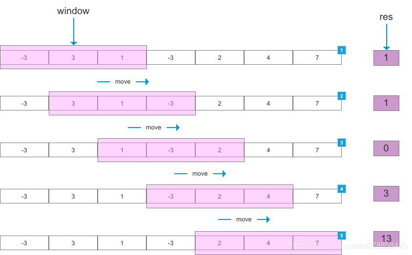
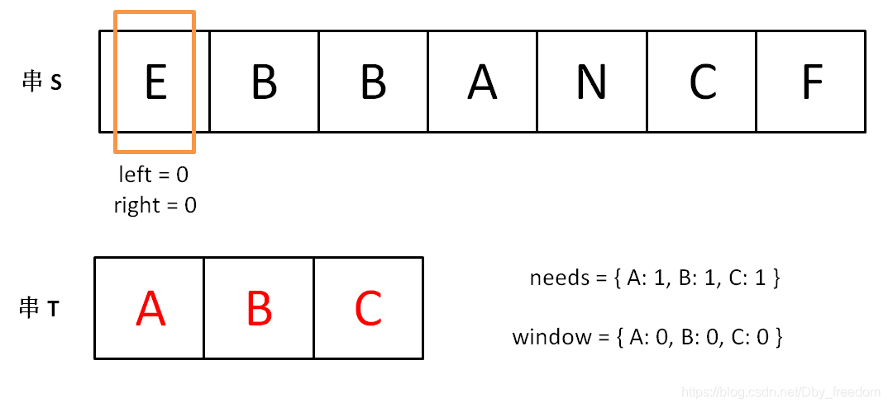
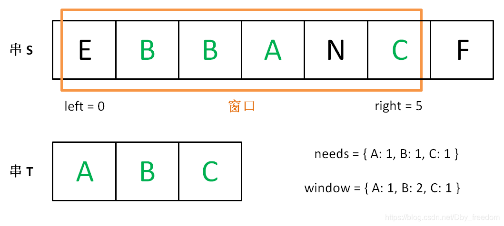
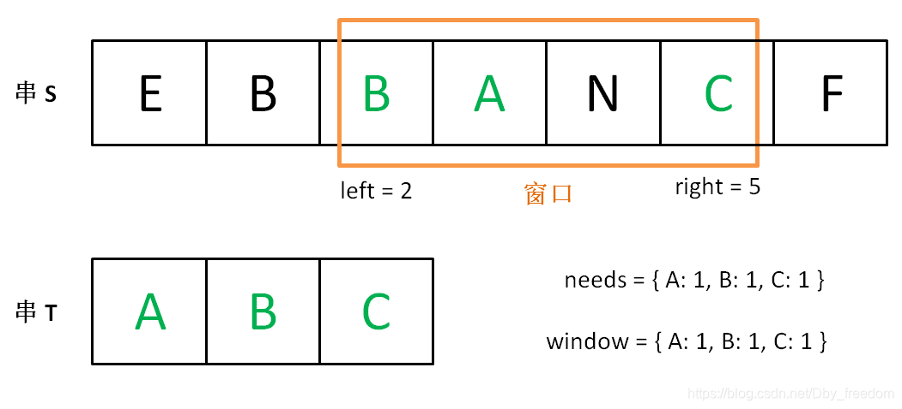
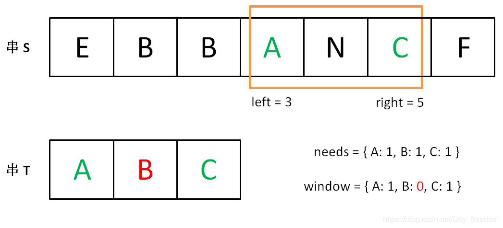
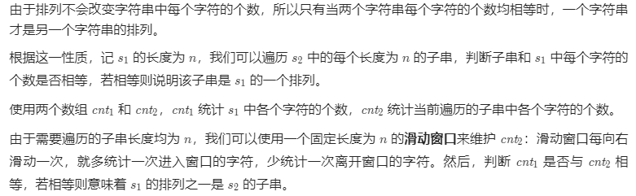
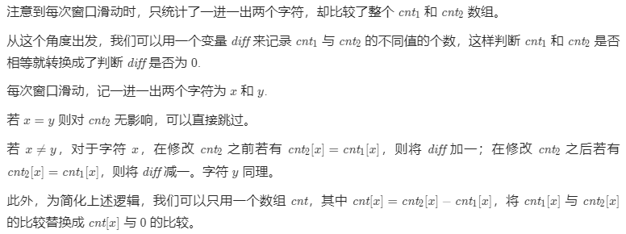
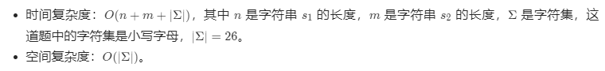
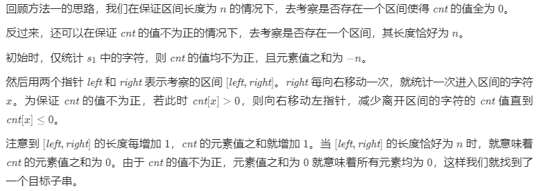
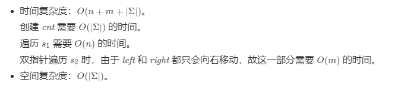

学过计算机网络的同学，都知道滑动窗口协议（Sliding Window Protocol），该协议是 TCP协议 的一种应用，用于网络数据传输时的流量控制，以避免拥塞的发生。该协议允许发送方在停止并等待确认前发送多个数据分组。由于发送方不必每发一个分组就停下来等待确认。因此该协议可以加速数据的传输，提高网络吞吐量。
滑动窗口算法其实和这个是一样的，只是用的地方场景不一样，可以根据需要调整窗口的大小，有时也可以是固定窗口大小。
滑动窗口算法（Sliding Window Algorithm）
Sliding window algorithm is used to perform required operation on specific window size of given large buffer or array.
滑动窗口算法是在给定特定窗口大小的数组或字符串上执行要求的操作。
This technique shows how a nested for loop in few problems can be converted to single for loop and hence reducing the time complexity.
该技术可以将一部分问题中的嵌套循环转变为一个单循环，因此它可以减少时间复杂度。
简而言之，滑动窗口算法在一个特定大小的字符串或数组上进行操作，而不在整个字符串和数组上操作，这样就降低了问题的复杂度，从而也达到降低了循环的嵌套深度。其实这里就可以看出来滑动窗口主要应用在数组和字符串上。
基本示例
如下图所示，设定滑动窗口（window）大小为 3，当滑动窗口每次划过数组时，计算当前滑动窗口中元素的和，得到结果 res。

可以用来解决一些查找满足一定条件的连续区间的性质（长度等）的问题。由于区间连续，因此当区间发生变化时，可以通过旧有的计算结果对搜索空间进行剪枝，这样便减少了重复计算，降低了时间复杂度。往往类似于” 请找到满足 xx 的最 x 的区间（子串、子数组)的 xx ”这类问题都可以使用该方法进行解决。
需要注意的是，滑动窗口算法更多的是一种思想，而非某种数据结构的使用。
滑动窗口法的大体框架
在介绍滑动窗口的框架时候，大家先从字面理解下：
- 滑动：说明这个窗口是移动的，也就是移动是按照一定方向来的。
- 窗口：窗口大小并不是固定的，可以不断扩容直到满足一定的条件；也可以不断缩小，直到找到一个满足条件的最小窗口；当然也可以是固定大小。
为了便于理解，这里采用的是字符串来讲解。但是对于数组其实也是一样的。滑动窗口算法的思路是这样：
- 我们在字符串 S 中使用双指针中的左右指针技巧，初始化 left = right = 0，把索引闭区间 [left, right] 称为一个「窗口」。
- 我们先不断地增加 right 指针扩大窗口 [left, right]，直到窗口中的字符串符合要求（包含了 T 中的所有字符）。
- 此时，我们停止增加 right，转而不断增加 left 指针缩小窗口 [left, right]，直到窗口中的字符串不再符合要求（不包含 T 中的所有字符了）。同时，每次增加 left，我们都要更新一轮结果。
- 重复第 2 和第 3 步，直到 right 到达字符串 S 的尽头。
这个思路其实也不难，第 2 步相当于在寻找一个「可行解」，然后第 3 步在优化这个「可行解」，最终找到最优解。左右指针轮流前进，窗口大小增增减减，窗口不断向右滑动。
下面画图理解一下，needs 和 window 相当于计数器，分别记录 T 中字符出现次数和窗口中的相应字符的出现次数。
初始状态：

增加 right，直到窗口 [left, right] 包含了 T 中所有字符：

现在开始增加 left，缩小窗口 [left, right]。

直到窗口中的字符串不再符合要求，left 不再继续移动。

之后重复上述过程，先移动 right，再移动 left…… 直到 right 指针到达字符串 S 的末端，算法结束。
如果你能够理解上述过程，恭喜，你已经完全掌握了滑动窗口算法思想。至于如何具体到问题，如何得出此题的答案，都是编程问题，等会提供一套模板，理解一下就会了。
上述过程对于非固定大小的滑动窗口，可以简单地写出如下伪码框架：
1 | string s, t; |
但是，对于固定窗口大小，可以总结如下：
1 | // 固定窗口大小为 k |
可以发现此时不需要依赖 left 指针了。因为窗口固定所以其实就没必要使用left，right 双指针来控制窗口的大小。
其次是对于窗口是固定的，可以轻易获取到 left 的位置，此处 left = right-k;
实际上，对于窗口的构造是很重要的。具体可以看下面的实例。
算法实例
3. 无重复字符的最长子串
给定一个字符串 s ，请你找出其中不含有重复字符的 最长子串 的长度。
示例 1:
输入: s = “abcabcbb”
输出: 3
解释: 因为无重复字符的最长子串是 “abc”，所以其长度为 3。
示例 2:
输入: s = “bbbbb”
输出: 1
解释: 因为无重复字符的最长子串是 “b”，所以其长度为 1。
示例 3:
输入: s = “pwwkew”
输出: 3
解释: 因为无重复字符的最长子串是 “wke”，所以其长度为 3。
请注意，你的答案必须是 子串 的长度，”pwke” 是一个子序列，不是子串。
示例 4:
输入: s = “”
输出: 0
提示：
0 <= s.length <= 5 * 104
s 由英文字母、数字、符号和空格组成
思路和算法
我们先用一个例子考虑如何在较优的时间复杂度内通过本题。
我们不妨以示例一中的字符串 abcabcbb 为例，找出从每一个字符开始的，不包含重复字符的最长子串，那么其中最长的那个字符串即为答案。对于示例一中的字符串，我们列举出这些结果，其中括号中表示选中的字符以及最长的字符串：
1 | 以 (a)bcabcbb 开始的最长字符串为 (abc)abcbb； |
发现了什么？如果我们依次递增地枚举子串的起始位置，那么子串的结束位置也是递增的！这里的原因在于，假设我们选择字符串中的第 k 个字符作为起始位置，并且得到了不包含重复字符的最长子串的结束位置为 r_k 。那么当我们选择第 k+1个字符作为起始位置时，首先从 k+1 到 r_k 的字符显然是不重复的，并且由于少了原本的第 k 个字符，我们可以尝试继续增大 r_k ，直到右侧出现了重复字符为止。
这样一来，我们就可以使用「滑动窗口」来解决这个问题了：
我们使用两个指针表示字符串中的某个子串（或窗口）的左右边界，其中左指针代表着上文中「枚举子串的起始位置」，而右指针即为上文中的 r_k；
在每一步的操作中，我们会将左指针向右移动一格，表示 我们开始枚举下一个字符作为起始位置，然后我们可以不断地向右移动右指针，但需要保证这两个指针对应的子串中没有重复的字符。在移动结束后，这个子串就对应着 以左指针开始的，不包含重复字符的最长子串。我们记录下这个子串的长度；
在枚举结束后，我们找到的最长的子串的长度即为答案。
判断重复字符
在上面的流程中，我们还需要使用一种数据结构来判断 是否有重复的字符，常用的数据结构为哈希集合（即 C++ 中的 std::unordered_set，Java 中的 HashSet，Python 中的 set, JavaScript 中的 Set）。在左指针向右移动的时候，我们从哈希集合中移除一个字符，在右指针向右移动的时候，我们往哈希集合中添加一个字符。
至此，我们就完美解决了本题。
代码
1 | class Solution { |
复杂度分析
- 时间复杂度：
O(N)，其中N是字符串的长度。左指针和右指针分别会遍历整个字符串一次。 - 空间复杂度：
O(∣Σ∣)，其中Σ表示字符集（即字符串中可以出现的字符），∣Σ∣表示字符集的大小。在本题中没有明确说明字符集，因此可以默认为所有ASCII码在[0,128)内的字符，即∣Σ∣=128。我们需要用到哈希集合来存储出现过的字符，而字符最多有∣Σ∣个，因此空间复杂度为O(∣Σ∣)。
1208. 尽可能使字符串相等
给你两个长度相同的字符串，s 和 t。
将 s 中的第 i 个字符变到 t 中的第 i 个字符需要 |s[i] - t[i]| 的开销（开销可能为 0），也就是两个字符的 ASCII 码值的差的绝对值。
用于变更字符串的最大预算是 maxCost。在转化字符串时，总开销应当小于等于该预算，这也意味着字符串的转化可能是不完全的。
如果你可以将 s 的子字符串转化为它在 t 中对应的子字符串，则返回可以转化的最大长度。
如果 s 中没有子字符串可以转化成 t 中对应的子字符串，则返回 0。
示例 1：
1 | 输入：s = "abcd", t = "bcdf", cost = 3 |
示例 2：
1 | 输入：s = "abcd", t = "cdef", cost = 3 |
示例 3：
1 | 输入：s = "abcd", t = "acde", cost = 0 |
代码
1 | class Solution { |
这里跟前面总结的框架不一样的一个点就是，前面的框架是求最小窗口大小，这里是求最大窗口大小，大家要学会灵活变通。
239. 滑动窗口最大值
给定一个数组 nums，有一个大小为 k 的滑动窗口从数组的最左侧移动到数组的最右侧。你只可以看到在滑动窗口内的 k 个数字。滑动窗口每次只向右移动一位。
返回滑动窗口中的最大值。
进阶：
你能在线性时间复杂度内解决此题吗？
示例:
1 | 输入: nums = [1,3,-1,-3,5,3,6,7], 和 k = 3 |
提示：
1 | 1 <= nums.length <= 10^5 |
解答：
1 | class Solution { |
这道题难度是困难。当然我们也会发现，这道题目和前面的非固定大小滑动窗口还是不一样的。
看了一道困难的题目后，接下来看一道中等难度的就会发现是小菜一碟。
1456. 定长子串中元音的最大数目
给你字符串 s 和整数 k 。
请返回字符串 s 中长度为 k 的单个子字符串中可能包含的最大元音字母数。
英文中的 元音字母 为（a, e, i, o, u）。
示例 1：
1 | 输入：s = "abciiidef", k = 3 |
示例 2：
1 | 输入：s = "aeiou", k = 2 |
示例 3：
1 | 输入：s = "leetcode", k = 3 |
示例 4：
1 | 输入：s = "rhythms", k = 4 |
示例 5：
1 | 输入：s = "tryhard", k = 4 |
提示：
1 | 1 <= s.length <= 10^5 |
解答
1 | class Solution { |
567. 字符串的排列
给定两个字符串 s1 和 s2，写一个函数来判断 s2 是否包含 s1 的排列。
换句话说，第一个字符串的排列之一是第二个字符串的 子串 。
1 | 示例 1： |
方法一：滑动窗口

代码
1 | class Solution { |
优化

1 | class Solution { |
复杂度分析

方法二：双指针

代码
1 | class Solution { |
复杂度分析


...
...
Copyright 2021 sunfy.top ALL Rights Reserved